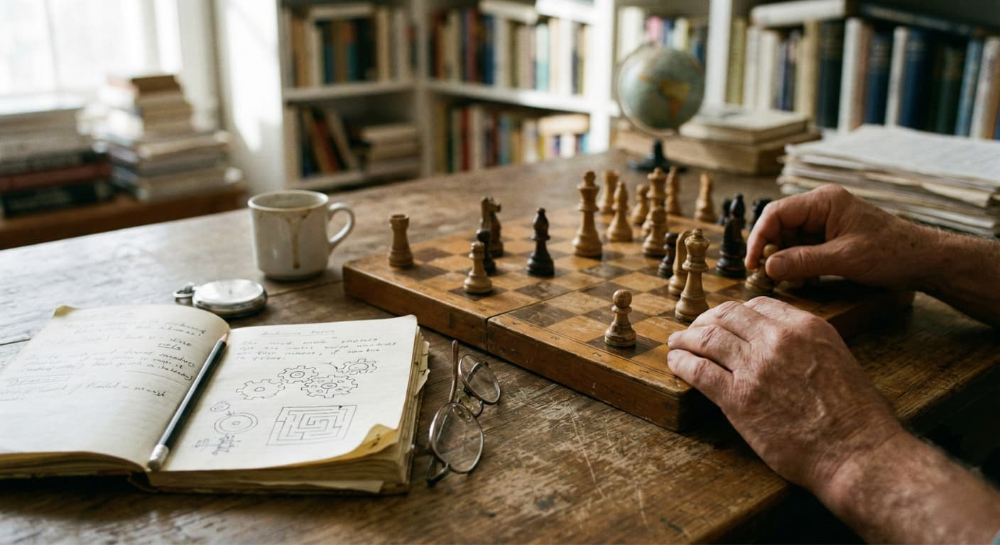
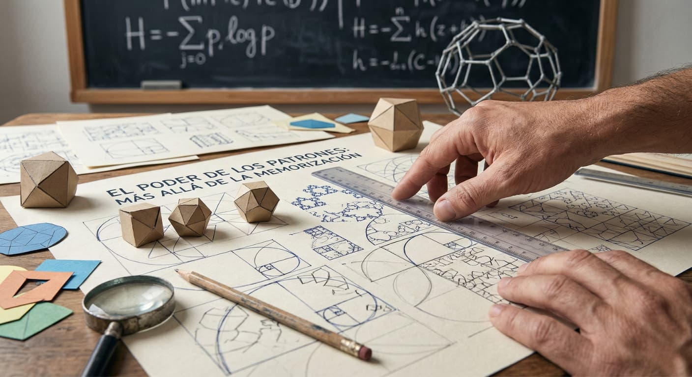
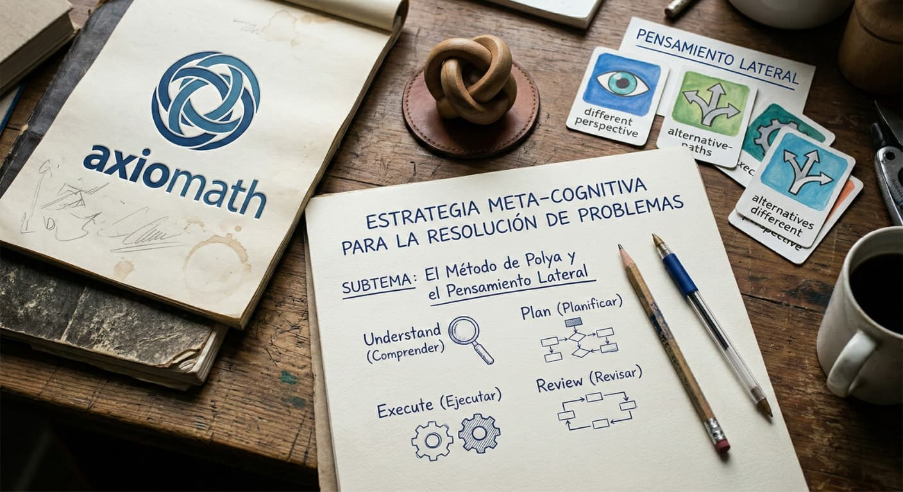

Potencia tu Mente: Explorando el Razonamiento Físico Matemático
Bienvenido a este espacio interactivo, el producto final de una investigación dedicada a transformar la manera en que entendemos y aplicamos la lógica. Mi proyecto de grado se centra en el estudio y la implementación de técnicas y mecanismos específicos diseñados para mejorar y potenciar el razonamiento físico-matemático.
Tradicionalmente, las matemáticas y la física se han visto como un conjunto de fórmulas rígidas; sin embargo, esta investigación propone que son, ante todo, una habilidad para la vida. Aquí aprenderás que razonar no es solo operar números, sino desarrollar la capacidad crítica para analizar fenómenos, deducir soluciones y comprender el mundo que nos rodea.
A través de los artículos, juegos y desafíos que encontrarás en esta plataforma, podrás poner en práctica las estrategias identificadas en mi estudio para fortalecer tus procesos cognitivos y llevar tu capacidad analítica al siguiente nivel.
Artículos Educativos
Selecciona un artículo para explorar los mecanismos del razonamiento.

El Gimnasio Cerebral
Descubre la neuroplasticidad y cómo cambia tu cerebro al razonar.
Leer artículo ➔
El Poder de los Patrones
Más allá de la memorización: reconoce estructuras en sistemas complejos.
Leer artículo ➔
Estrategias Meta-cognitivas
Aprende el Método de Polya y el pensamiento lateral para resolver problemas.
Leer artículo ➔El Gimnasio Cerebral: Neuroplasticidad y el Fortalecimiento del Pensamiento
¿Cómo cambia el cerebro al razonar?
El razonamiento físico-matemático no es una capacidad estática; es un proceso biológico y cognitivo dinámico. El principal mecanismo detrás de la mejora es la neuroplasticidad, que es la habilidad del cerebro para reorganizar sus vías neuronales. Cuando enfrentas un desafío lógico, las sinapsis (conexiones entre neuronas) se fortalecen.
Mecanismos para potenciar esta área:
- La Abstracción Progresiva: Este mecanismo consiste en pasar de lo concreto (objetos reales) a lo simbólico (números y variables). Para mejorar, se recomienda empezar manipulando elementos físicos o simuladores virtuales antes de saltar a las ecuaciones complejas.
- Visualización Espacial y Modelado: En física, el razonamiento está ligado a la capacidad de "ver" el movimiento en la mente. Practicar con diagramas de cuerpo libre o proyecciones 3D activa el lóbulo parietal, mejorando la comprensión de conceptos como la fuerza o la aceleración.
El Poder de los Patrones: Más allá de la Memorización
Reconocimiento de estructuras en sistemas complejos
Uno de los mecanismos más potentes del razonamiento matemático es el reconocimiento de patrones. Los jóvenes suelen creer que las matemáticas son un océano de fórmulas aisladas, pero en realidad son una red de estructuras que se repiten. Quien razona no recuerda la fórmula, reconoce la situación.
Técnicas de identificación:
- Inducción y Deducción: El razonamiento inductivo permite observar casos particulares para encontrar una regla general (fundamental en la investigación científica), mientras que el deductivo aplica leyes generales a casos específicos.
- El Uso de Analogías Estructurales: Un mecanismo clave para potenciar el entendimiento es comparar sistemas. Por ejemplo, entender que el flujo de calor en un material sigue reglas lógicas similares al flujo de agua en una tubería. Al dominar una estructura lógica, automáticamente "desbloqueas" la comprensión de otros fenómenos físicos similares.
Estrategias Meta-cognitivas para la Resolución de Problemas
El Método de Polya y el Pensamiento Lateral
El razonamiento físico-matemático se potencia drásticamente cuando dejamos de enfocarnos solo en el resultado y empezamos a analizar cómo pensamos. Esto se llama metacognición. Si un estudiante entiende sus propios procesos mentales, puede corregir errores antes de cometerlos.
Mecanismos de resolución efectiva:
- El Método de los Cuatro Pasos (Polya):
- Comprender el problema: Leer hasta poder explicarlo con palabras propias.
- Concebir un plan: Determinar qué mecanismo lógico (simetría, inversión, ensayo y error) es el adecuado.
- Ejecutar el plan: Resolver con rigor matemático.
- Visión retrospectiva: Reflexionar sobre si el resultado tiene sentido físico y si hay un camino más simple.
- Pensamiento Lateral: En física, a veces la solución no es lineal. Este mecanismo invita a romper esquemas y buscar ángulos no convencionales, como simplificar un sistema eliminando variables no críticas o usando simetría para evitar cálculos innecesarios.
Fuente y más información: Fortaleciendo el razonamiento y entrenamiento cognitivo (Smartick)
Juegos Lógicos
Pon a prueba tu mente con estos desafíos interactivos.
Sistema de Ecuaciones Visual
Descubre el valor oculto de cada objeto para resolver el sistema de ecuaciones.
Jugar ahora ➔Análisis de Potencias
Analiza las operaciones y determina cuál es mayor y por qué diferencia.
Jugar ahora ➔Jerarquía Suprema
Desafía tu mente resolviendo una operación combinada engañosa. ¡Cuidado con la trampa!
Jugar ahora ➔Deducción y Álgebra
Lee las pistas lógicas de números primos y deduce qué caja debes abrir.
Jugar ahora ➔Problema de Fracciones
Lee con atención el enunciado y resuelve este problema con fracciones.
Jugar ahora ➔Une las Parejas
Relaciona cada problema de porcentajes y raíces con su respuesta correcta.
Jugar ahora ➔¿Quieres seguir practicando?
Si te gustaron estos desafíos y quieres encontrar más juegos interactivos para potenciar tu razonamiento físico-matemático, te sugerimos visitar estas excelentes plataformas educativas:
- 🧠 Cerebriti (Sección Matemáticas): Miles de minijuegos creados por la comunidad para ejercitar el cálculo mental, la geometría y la lógica.
- 🎮 Cokitos (Matemáticas y Lógica): Catálogo interactivo con acertijos, pirámides numéricas y problemas de razonamiento para todas las edades.
- 💡 Smartick (Juegos de Entrenamiento Cognitivo): Plataforma enfocada en la gimnasia mental, la atención y el razonamiento a través de juegos interactivos.
- 🎡 Wordwall: Gran comunidad de juegos de razonamiento matemático y abrecajas.
Juego 1: Sistema de Ecuaciones Visual
Resuelve el sistema paso a paso para encontrar el valor final:
📏 - (✏️ x ✏️) = 5
(✏️ x 📏) - 🖍️ = 10
¿Cuánto vale el crayon verde (🖍️)?
Juego 2: Análisis de Potencias
¿Qué lado es mayor... y por cuánto de diferencia?
Juego 3: Jerarquía Suprema
No te dejes engañar por el orden visual. ¿Cuál es el resultado real?
Juego 4: Deducción y Álgebra
Abre la caja que contiene la respuesta al siguiente acertijo:
- 🔍 Soy un número primo.
- 🔍 Soy menor que 10.
- 🔍 Si me multiplicas por 2 y me sumas 1, el resultado es 15.
¿Qué caja soy?
Juego 5: Problema de Fracciones
Juan sembró 24 lechugas. Las gallinas se comieron un tercio (1/3) de ellas, y luego Juan regaló la mitad de las que quedaron.
¿Cuántas lechugas le sobraron?
Juego 6: Une las Parejas
Selecciona la respuesta correcta para cada caso:
Material Audiovisual
Explora estos videos para complementar tu aprendizaje sobre el razonamiento físico y matemático.
¿Cómo desarrollar el razonamiento matemático?
Descubre estrategias prácticas para entrenar tu cerebro y transformar la forma en que abordas los problemas lógicos. Un excelente punto de partida para mejorar tu agilidad mental paso a paso.
Los 7 Niveles del Razonamiento Matemático
La metacognición en acción: aprende a identificar en qué etapa de comprensión te encuentras y descubre qué herramientas necesitas dominar para alcanzar el nivel más alto de abstracción.
Cómo ser más inteligente y tener más lógica en matemáticas, física, química, tecnología y la vida
Entiende por qué la lógica va mucho más allá de las fórmulas. Aprende a aplicar el pensamiento crítico estructurado para sobresalir en las ciencias y tomar mejores decisiones en tu día a día.
Evalúa tu Progreso
Próximamente: Cuestionarios para medir el razonamiento.